（120,66）
すぐにまた戻ってくる。
ファストポータル
スウェブタワー より。
ブロデルは、タワーの外に出て右下方面（120,66）にいる。


対象はクモ2種類。あちこちにいる。5匹倒すとUP。
（120,66）
（66,25）
（173,58）
（6,48）
| クエスト名 | |
|---|---|
| １ | 黄色のメリックが残した遺物１ |
| ↓ | |
| ２ | 黄色のメリックが残した遺物２ |
| ↓ | |
| ３ | 黄色のメリックが残した遺物３ |
| ↓ | |
| ４ | 黄色のメリックが残した遺物４ |
| ↓ | |
| ５ | 黄色のメリックが残した遺物５ |
| NPC | 報酬・EXP | クエ内容 | MAP/座標 | 備考 |
|---|---|---|---|---|
| オクレル | 荒廃都市ダメル （29,42） |
記憶１推奨。 すぐ戻ってくる。 スタートはダメルのオクレルから。 ファストポータル ガディウス大砂漠／モリネルタワー付近 飛んだ先のすぐ左にある移動ポータルに入り、ダメルへ。 オクレルはダメルに入って左方面（29,42）にいる。 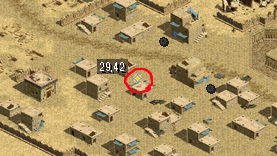 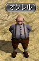 このクエは一度受けるとキャンセル不可なので注意。 |
||
| シュトラウズ | 荒廃都市ダメル （66,25） |
記憶２推奨。 すぐ戻ってくる。 オクレルから右方向、ダメルの入口から少し上のあたり。 |
||
| 石版を見に行く | ダメル地下遺跡 （173,58） |
すぐ左上の移動ポータルからダメル地下遺跡へ。 石版は入って少し行った所（173,58）にある。 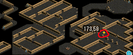 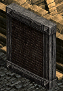 石版をクリックし、１→１と選んでUP。 |
||
| シュトラウズ | 荒廃都市ダメル （66,25） |
記憶２を使って。 | ||
| オクレル | 解読できそうな人を紹介してもらう | 荒廃都市ダメル （29,42） |
記憶１を使って。 | |
| スタイング | 魔法都市スマグ （6,48） |
記憶１推奨。 何度も来る。 スマグへの行き方は ①冒険者協会のテレポーターからスマグ支部へ飛ぶ ②ファストポータル「ヘムクロス高原／アラク湖」付近に飛び、飛んだ先の移動ポータルに入って高原南部地域に戻り、そこからずっと← の２つの方法がある。お好みで。 スタイングは町の左端方面（6,48）にいる。 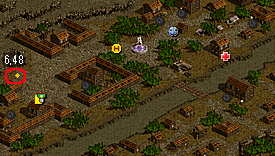 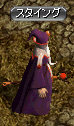 最後までプレイヤーの事をずっと息子のガストンと勘違い（？）され続ける。 |
||
| スタイング | 魔法都市スマグ （6,48） |
すぐにもう一度話しかける。 |
| NPC | 報酬・EXP | クエ内容 | MAP/座標 | 備考 |
|---|---|---|---|---|
| ブロデル | 石版を修復するための方法を相談する | ヘムクロス高原／アラク湖付近 （120,66） |
記憶２推奨。 すぐにまた戻ってくる。 ファストポータル スウェブタワー より。 ブロデルは、タワーの外に出て右下方面（120,66）にいる。 |
|
| 接着剤の材料を手に入れる | スウェブタワー１F | 1度町へ戻り、ファストポータルを使ってもう一度スウェブタワーへ。 対象はクモ2種類。あちこちにいる。5匹倒すとUP。 |
||
| ブロデル | ヘムクロス高原／アラク湖付近 （120,66） |
記憶２を使って。 | ||
| シュトラウズ | 石版をもらう許可を得る | 荒廃都市ダメル （66,25） |
||
| 石版を修復し、手に入れる | ダメル地下遺跡 （173,58） |
石版をクリックし１→１でUP。 | ||
| スタイング | 石版を見てもらう | 魔法都市スマグ （6,48） |
記憶１を使って。 |
| NPC | 報酬・EXP | クエ内容 | MAP/座標 | 備考 |
|---|---|---|---|---|
| ヘンリエット | 拓本の解読を依頼する | 古都ブルンネンシュティグ （126,103） |
ヘンリエットは古都の国会議事堂の右下付近（126,103）にいる。 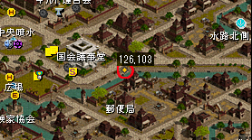  |
|
| スタイング | 魔法都市スマグ （6,48） |
記憶１を使って。 | ||
| ディラ | スマグ地下道Ｂ１ （67,33） |
スタイングの下にある移動ポータルからウィザードギルドへ。 右下にいるハルスに話しかけ、５万Ｇを払ってスマグ地下道へ入る。 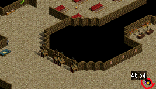 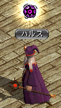 ディラは入って右方面（67,33）にいる。ｌ 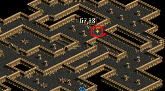 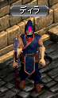 |
||
| レッドアイの残党を片付ける | スマグ地下道Ｂ１ | 対象ＭＯＢはレッドアイ信奉者（黄色のやつ）。 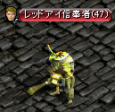 周りにそれなりにいる。５匹倒してＵＰ。 |
||
| ディラ | 黄色のメリックについての話を聞く | スマグ地下道Ｂ１ （67,33） |
||
| スタイング | 魔法都市スマグ （6,48） |
記憶１を使って。 |
| NPC | 報酬・EXP | クエ内容 | MAP/座標 | 備考 |
|---|---|---|---|---|
| ヘンリエット | 解読本を受け取る | 古都ブルンネンシュティグ （126,103） |
||
| スタイング | 魔法都市スマグ （6,48） |
記憶１を使って。 | ||
| ブロデル | ヘムクロス高原／アラク湖付近 （120,66） |
記憶２を使って。 | ||
| 覚醒の霊水を取り戻す | ヘムクロス高原／アラク湖付近 | すぐ←にいるティンバーマンを倒してＵＰ。 | ||
| ブロデル | ヘムクロス高原／アラク湖付近 （120,66） |
|||
| スタイング | 魔法都市スマグ （6,48） |
息子のガストンと間違えていたのはわざとだったということが、ここで分かる。 ずっとだまされていたのか(ﾟДﾟ)ｸﾜｯ |
| NPC | 報酬・EXP | クエ内容 | MAP/座標 | 備考 |
|---|---|---|---|---|
| アルブレヒト | 古都ブルンネンシュティグ （42,49） |
記憶１推奨。 すぐに戻ってくる。 アルブレヒトはペイトン（10万品売りNPC）のすぐ上（42,49）にいる。 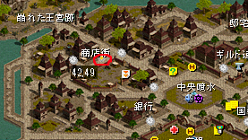 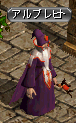 |
||
| 東プラトン街道／イースタンブリッジ付近 | 古都→のマップに出て、すぐの所のクモを倒してＵＰ。 | |||
| アルブレヒト | 古都ブルンネンシュティグ （42,49） |
ここでクエは終了、覚醒が行われる。 |